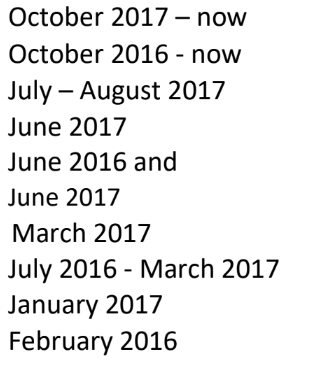
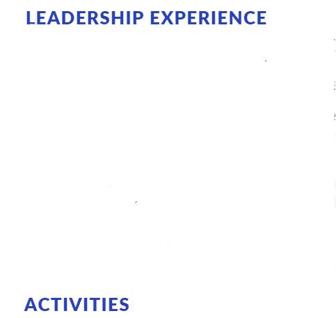
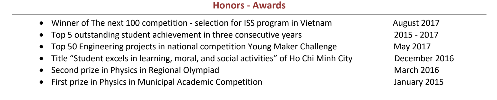
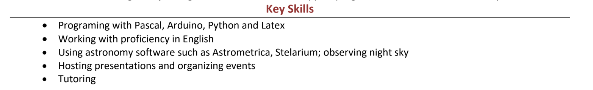
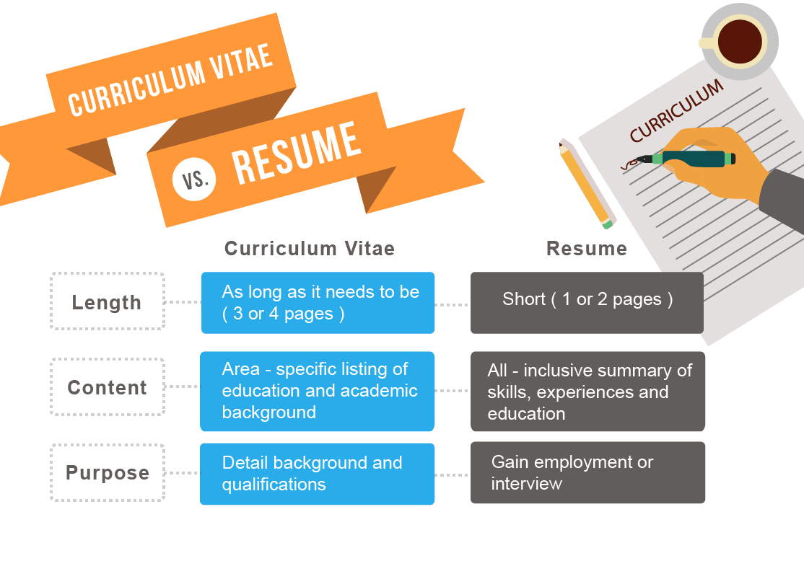

Outline¶
Lời mở đầu
Đối tượng
Brainstorm
- Nội dung
4.1. Resume là gì 4.2. Trong resume có những gì
Thông tin liên lạc
Học vấn
Giải thưởng
Hoạt động ngoại khóa Hình ảnh resume của bạn Sắp xếp Mô tả Kỹ năng Sở thích Biểu đồ, đồ họa
5. Một số lưu ý Đừng ghi khống Proofreading #. Mở rộng Sự khác biệt của resume và CV Các khóa học tham khảo #. Resume mẫu #. Lời kết
Lời mở đầu¶
Khi bạn đã tìm đến bài viết này, có nghĩa là bạn cũng đã có/ hơi hơi có ý định làm một resume. Đương nhiên thay vì đọc bài viết này, bạn có thể dễ dàng lên google và search “resume writing guide” thì bạn cũng sẽ biết cách làm một resume.
Vậy thì, mình có gì để giữ chân bạn? À, có Hoàng Phạm Gia Khang gợi ý cho bạn đọc.
Đùa thôi.
Đầu tiên thì, khi mình viết bài viết này, mình cũng chỉ cỡ tuổi các bạn - những học sinh cấp ba. Thế nên, mình sẽ mặc định rằng resume bạn gửi cho người khác sẽ được viết từ một học sinh cấp 3, nên mình sẽ có những lời khuyên, góc nhìn phù hợp với độ tuổi (thậm chí là văn hóa) hơn so với những trang web khác.
Tiếp theo, mình cũng đã thử đọc những hướng dẫn viết resume trên mạng (không nhiều lắm, khoảng 10 trang web gì đó thôi, tiếng Việt lẫn tiếng Anh) thì mình nhận ra là có những nơi hướng dẫn quá chi tiết nhưng không áp dụng hết cho học sinh cấp ba, có những nơi thì lại quá chung chung. Mình hy vọng bài viết của mình sẽ không mắc phải những lỗi đó.
Trong quá trình hướng dẫn, mình có phân tích resume mẫu từ những người cũng đã app du học: anh Nguyễn Hữu Thịnh (Villanova ‘22), chị Lê Kim Thư (Depauw ‘24) và mình (Denison ‘24). Việc này sẽ cho các bạn những ví dụ cụ thể để dễ hình dung hơn.
Đối tượng¶
- Nếu bạn đang có có ý định:
Nộp đơn vào các hoạt động ngoại khóa
Tăng sức nặng cho hồ sơ học bổng ngắn hạn
Làm hồ sơ du học, đặc biệt là Mỹ
Thì đó là khi bạn nên làm một resume.
- Nếu bạn dự định:
Xin việc làm ngắn hạn/ dài hạn có trả lương
Nộp chương trình học Thạc sĩ/ Tiến sĩ
Khi đó, CV (Curriculum Vitae) sẽ là một lựa chọn tốt hơn cho bạn.
Tại sao lại có sự khác nhau như vậy? Ở mục “mở rộng”, mình sẽ phân tích kỹ hơn.
Còn trước mắt, mình sẽ hướng dẫn cho các bạn cách viết một resume. Còn về cách viết một CV, khi nào mình làm một cái CV rồi thì mình sẽ quay lại hướng dẫn sau nhé… :D
Bài hướng dẫn này chủ yếu hướng đến học sinh cấp ba (lớp 11, 12) nộp resume cho du học Mỹ (hoặc một số nơi khác). NGO thì mình sẽ chỉ đề cập ngắn gọn thôi.
Brainstorm¶
Trước khi bắt tay vào làm resume, bạn phải có những gì đó để bỏ vào, đúng chứ? Đâu ai có thể viết mà không biết viết gì được.
Thế nên, đầu tiên, hãy dành vài phút để nghĩ xem bạn đã có gì.
Không có/ không có nhiều hoạt động để ghi vào resume? Hãy tham khảo bài viết 8 Hoạt động ngoại khóa nên có trong resume và bắt đầu tìm kiếm những hoạt động phù hợp với mục đích của bạn nhé.
Có hoạt động ngoại khóa kha khá rồi? Đi tới phần tiếp theo liền nào!
Nội dung¶
Resume là gì?¶
Thực ra, mình chẳng biết định nghĩa chính xác của “resume” là gì - mỗi trang web mỗi khác. Chắc hiểu một cách đơn giản, resume là một bản tóm lược con người bạn, và cho người đọc thấy rằng, “bạn hợp với họ”.
Về độ dài, một resume để nộp đơn du học cho học sinh cấp 3 chỉ cần dài một trang giấy A4 là được. Suy cho cùng, đâu phải ai cũng rảnh để đọc hết hơn 2 trang giấy A4 phủ kín chữ và chữ đâu, nên “chọn lọc” là một yếu tố rất quan trọng đấy.
Trong resume có những gì?
- Sẽ cần có những thứ như:
Thông tin liên lạc
Học vấn
Giải thưởng, bằng khen
Hoạt động ngoại khóa
Kỹ năng
Bạn có thể cân nhắc đề cập thêm sở thích, hoặc biểu diễn với đồ họa, biểu đồ,… để resume sinh động và nhiều thông tin hơn.
Về thứ tự, bạn có thể sắp xếp theo bất cứ thứ tự nào mình muốn, không nhất thiết phải như thứ tự ở trên mình gợi ý.
Thông tin liên lạc¶
Ghi thông tin liên lạc để khi người ta đọc, thì ít ra họ sẽ nhớ bạn là ai. Dù là ghi trong một ô lớn ở lề trái/ phải, hay chỉ là vài dòng ngắn ở ngay dưới tên bạn, thì luôn phải có. Thông tin liên lạc tối thiểu là email và số điện thoại. Bạn có thể thêm Linkedin để nhìn “chuyên nghiệp” hơn. Học vấn Vì mình đang hướng đến học sinh cấp 3, và nếu nộp cho du học, nên bạn cần nhớ lại lớp 9, 10, 11 bạn học trường nào, điểm trung bình cả năm của bạn là bao nhiêu để ghi vào là được. Bạn có thể ghi thêm lớp chuyên của mình nếu có.
Bạn có thể ghi thêm điểm SAT, IELTS, SAT 2, AP,… nếu có và nếu muốn.
Nếu nộp cho NGO, bạn có thể không ghi phần này hoặc chỉ ghi khóa ở trường hiện tại của bạn để người đọc biết bạn học ở đâu là đủ rồi.
Giải thưởng¶
Nhớ về những giải thưởng mà bạn có được. Bạn tham gia khi nào, nhận được giải mấy, cấp trường/ quận/ thành phố/ quốc gia/ quốc tế? Phần này, bạn chỉ cần xếp theo thứ tự ngược thời gian (gần đây nhất đến xa nhất) là được, không cần phải suy nghĩ nhiều.
Giải thưởng cũng khá đa dạng, từ giải học thuật đến các giải nghệ thuật, từ giải thi cho trường cho đến các giải thi đấu ở nơi khác. Cứ ghi vào thôi, miễn nó là một phần của bạn.
Anh Thịnh đã sắp xếp giải thưởng theo thứ tự quan trọng nhất và ngược thời gian như thế này:
Hoạt động ngoại khóa¶
Là một phần quan trọng của resume đấy, nên hãy tập trung vào nó nhé.
Hình ảnh resume của bạn: Bạn muốn thể hiện mình là con người như thế nào?¶
Resume là để cho người đọc thấy con người của bạn, và từ đó, họ nhận ra bạn hợp với họ.
Điều đó có nghĩa là không bắt buộc phải nhét mọi thứ bạn đã làm vào resume, dù về cơ bản thì làm thế cũng được (hãy có sự sắp xếp hợp lý), nhưng đừng áp lực phải giữ lại hết. Bạn có thể chọn lọc.
Đầu tiên, hãy hình dung, resume của bạn mang hình ảnh gì? Và nhớ là cần có nhiều hoạt động ngoại khóa và kỹ năng góp phần xây dựng nên hình ảnh bạn muốn người ta thấy nhé.
Ví dụ nhé, bạn muốn cho người ta thấy khả năng lãnh đạo, thì bạn sẽ chia danh sách hoạt động ngoại khóa ra thành hai phần. Một phần cho leadership - nơi bạn viết cụ thể những hoạt động bạn làm lãnh đạo, một phần cho những hoạt động còn lại.
Ví dụ như resume của mình, mình có phần cho những hoạt động ưu tiên là leadership experience và phần activities cho những hoạt động còn lại.
Nếu như bạn không có nhiều hoạt động ngoại khóa để có thể lựa chọn để mà sắp xếp, thì hãy mô tả nhiều hơn ở những hoạt động bạn tâm huyết, và ít hơn ở những hoạt động không quan trọng khác.
Sắp xếp¶
Bạn có thể chọn một trong ba cách để sắp xếp, hoặc kết hợp hai trong ba, miễn sao phù hợp với bạn.
Quan trọng nhất đến ít quan trọng nhất Lâu nhất đến nhanh nhất Xếp ngược trình tự thời gian
Ví dụ với resume của anh Thịnh, anh đã xếp các hoạt động ngoại khóa theo thứ tự ngược thời gian như thế này:
Mô tả hoạt động ngoại khóa
Với những mục mà bạn ưu tiên, hãy nhớ lại “bạn đã làm gì cho câu lạc bộ/ hoạt động ngoại khóa đó?” Càng chi tiết càng tốt. Bạn viết bao nhiêu bài posts một tháng cho câu lạc bộ? Bạn hỗ trợ gây quỹ cùng mọi người được bao nhiêu tiền? Bạn tổ chức bao nhiêu sự kiện trong một năm? Một sự kiện có trung bình bao nhiêu người đến tham dự? Và nhiều câu hỏi tương tự.
Khi đã mô tả được rồi, thì đến lúc tóm gọn lại và viết thật ngắn gọn, súc tích. Viết lại câu mô tả bằng những gạch đầu dòng, đưa động từ lên đầu câu và cắt đi những chi tiết thừa khác. Bạn có thể tham khảo những từ vựng “mạnh” được dùng trong resume/ CV để trình bày lại câu mô tả của mình ( themuse).
Mình đã viết cho NKSC trong resume thế này:
Đây là một ví dụ cho việc mô tả chi tiết hoạt động ngoại khóa ưu tiên.
Kỹ năng¶
Một cách để người đọc “hiểu” bạn hơn là hãy cho người ta biết bạn có kỹ năng gì, và từ đó người ta sẽ đánh giá được liệu bạn có hợp với công việc hay không, hay là có hợp với trường đó hay không.
Bạn có thể ghi kỹ năng theo sự ưa thích của công ty, hoặc trong resume trong du học, chỉ cần là chính bạn. Bạn có kỹ năng gì thì ghi vào, chọn lọc và sắp xếp hợp lý thì sẽ ổn thôi.
Kỹ năng sẽ bao gồm kỹ năng cứng (hard skill) và kỹ năng mềm (soft skill). Tuy nhiên thì trong resume, không nhất thiết phải phân biệt rạch ròi hai cái này, ghi chung là “kỹ năng” luôn cũng được.
Key skills của anh Thịnh
Sở thích¶
Nếu như bạn còn chỗ trống nhiều, và sở thích của bạn có gì đó đặc biệt, thì bạn có thể thêm sở thích vào resume của mình.
Nếu như bạn có giải thưởng với sở thích của mình (như giải cờ vua, piano,…) thì đừng ghi ở đây, hãy đem lên mục “Giải thưởng” thì sẽ tỏa sáng hơn.
Nếu bạn có sở thích vẽ, hay dịch thuật, bạn có thể ghi vào đây, và gửi thêm supplemental materials. Điều này sẽ làm tăng sức cạnh tranh hồ sơ của bạn lên đấy!
Mình có biết những bạn có những sở thích rất thú vị, như là thu thập lá, tem, sơn tường,… Hãy thử xem xét bản thân có những gì hay ho như thế không nhé.
Đôi khi, bạn có thể ghi kỹ năng (skills) cùng với sở thích (interest) luôn.
Biểu đồ, đồ họa¶
Hãy sử dụng đến biểu đồ hoặc đồ họa nếu như bạn còn nhiều chỗ trống. (Nếu không còn mấy thì cứ bỏ qua là được.)
Biểu đồ, đồ họa có thể dùng trong việc biểu diễn mức độ thành thạo kỹ năng của bạn, hay là thể hiện cột thời gian cho các hoạt động ngoại khóa. Đôi khi chúng cũng có thể là những biểu tượng (emoji) cho phần thông tin liên lạc.
Nếu resume của bạn hướng đến lĩnh vực nghệ thuật, thì bạn sẽ rất cần phần đồ họa để gây ấn tượng mạnh với người đọc đấy.
Resume của chị Lê Kim Thư, Depauw ‘24 (ờm chưa nhắn xin chị haha…)
Chị ấy dùng đồ họa để liên kết các phần trong resume của mình. Mỗi vật ở đây sẽ dẫn đến một phần nào đó (kinh nghiệm, sở thích,…)
Tùy vào sức tưởng tượng và sáng tạo của bạn mà bạn có thể áp dụng đồ họa cho bất cứ mục nào theo nhu cầu của bạn. Nhưng hãy có sự sắp xếp hợp lý và vừa phải.
Bạn có thể thiết kế resume theo template từ canva.com hay tự mình thiết kế bằng Pts, Ai, cũng được. Miễn sao resume của bạn dễ đọc, trình bày khoa học là oke.
Nói về việc có nên sử dụng hình ảnh bản thân trong resume không, thì đó là tùy người và tùy vào chỗ trống bạn còn. Anh Thịnh và mình không dùng, nhưng chị Thư thì có.
Một số lưu ý¶
Đừng ghi khống¶
Về cơ bản, chẳng ai có thể kiểm chứng những gì bạn viết trong resume, đâu phải ai cũng rảnh để gọi điện và xác minh thông tin (đặc biệt là với việc nộp đơn du học)? Nên người đọc sẽ mặc định bạn đang viết sự thật.
Chính vì vậy, đừng ghi khống, hay ghi những thông tin không đúng sự thật. Nó sẽ không tăng khả năng cạnh tranh của bạn lên quá cao (resume chỉ là một phần trong bộ hồ sơ của bạn thôi), và có thể trở thành điểm yếu của bạn. Nếu như lỡ trong cuộc phỏng vấn, người đọc hỏi thăm về một phần trong resume, xui xẻo trúng phần bạn ghi khống và bạn không thể trả lời trôi chảy, thì lúc này, họ sẽ có cơ sở nghi ngờ tính trung thực của resume, và tệ hơn, là cả bộ hồ sơ.
Thế nên, đừng vì ráng viết thêm vài dòng trong resume mà phải đối mặt với nguy cơ bị loại cả bộ hồ sơ nhé.
Proofreading¶
Thực ra thì, không chỉ riêng resume, mà bất cứ loại văn bản nào cũng cần proofreading. Suy cho cùng, chẳng ai muốn gây ấn tượng về sự cẩu thả, thiếu chuyên nghiệp với nhân viên tuyển sinh hay người chấm đơn của mình, đúng không?
Nên hãy proofreading. Có thể tự mình đọc, nhờ một, hai người khác đọc thêm nữa thì sẽ càng chỉ ra được nhiều lỗi sai và sẽ tốt hơn.
Mở rộng¶
Sự khác biệt của resume và CV?
Mục đích của resume với việc nộp đơn du học là để nhân viên tuyển sinh có một cái nhìn tổng quan về con người bạn.
Tại sao bạn không nộp CV cho việc nộp đơn du học? Đầu tiên, bạn sẽ không cần phải nói quá nhiều về một mảng nào đó (như là đam mê môi trường của bạn) - họ sẽ biết được điều đó qua phần còn lại của hồ sơ (bài luận chính, bài luận phụ,…). Tiếp theo, vì khi nộp du học Mỹ, bạn đâu chỉ nộp mỗi CV mà sẽ là rất nhiều thứ khác, nên làm sao họ có thời gian đọc hết CV 3-4 trang được?
Khi này, resume sẽ đủ đáp ứng yêu cầu và tiện lợi hơn.
Các khóa học tham khảo
Bạn cũng có thể tham khảo một số khóa học trên mạng về viết resume:
Resume mẫu (references)¶
Lời kết¶
Mong là bạn có thể học hỏi được gì đó qua cái bài viết dài gần 3500 chữ này, lol.
Mình cũng có định viết về cách viết email và CV nữa, nhưng nói thật là mình khá lười, nên nếu bạn quan tâm thì mình sẽ thả nhẹ hai chiếc link ở đây.
Về những references đã sử dụng trong bài viết này, cảm ơn anh Nguyễn Hữu Thịnh (Villanova ‘22) (dù em chưa xin phép anh nữa em xin lỗi :D) đã để lại resume cho khóa sau học hỏi, chị Lê Kim Thư (Depauw ‘24) (cũng chưa xin…) với resume rất sáng tạo.